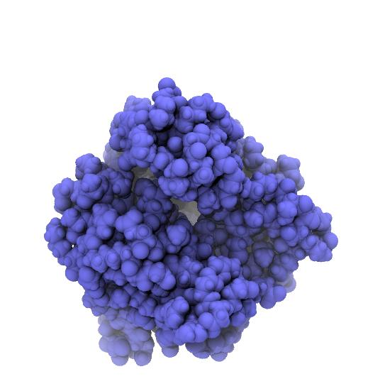
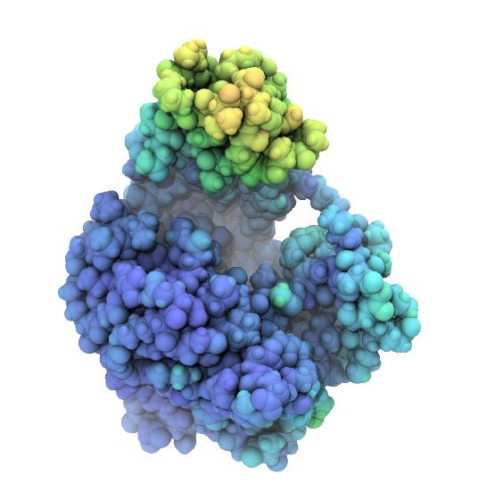

7. Writing coordinates¶
MDAnalysis also supports writing of data in a range of file formats (see the Table of supported coordinate formats for details). MDAnalysis supports both single frame writers (such as a simple PDB or GRO file) and trajectory writers (e.g. XTC, DCD, but also multi-frame PDB files).
7.1. Single frames¶
The most straightforward way to write to a file that can only hold a
single frame is to use the
write() method of any
AtomGroup as already also shown under
Processing AtomGroups. For instance, to only write out the
protein without solvent to a file in GRO format:
from MDAnalysis.tests.datafiles import PDB
u = MDAnalysis.Universe(PDB)
protein = u.select_atoms("protein")
protein.write("protein.gro")
MDAnalysis uses the file suffix to determine the output file format (unless the format keyword is specified) and will raise an exception if it is not suitable for single frame writing (see the Table of supported coordinate formats for details).
7.2. Trajectories¶
The typical use pattern is to
- Get a trajectory writer with
MDAnalysis.Writer, typically specifying in advance how many atoms a frame will contain. - Use the
write()method to write a new time step to the trajectory. - Close the trajectory with
close()(although it is recommended to simply use the writer with thewithstatement and have the context manager close the file automatically).
7.2.1. Example: Protein-only trajectory¶
In practice, the second step is typically repeated in a loop as in the example below:
import MDAnalysis
from MDAnalysis.tests.datafiles import PDB, XTC
u = MDAnalysis.Universe(PDB, XTC)
protein = u.select_atoms("protein")
with MDAnalysis.Writer("protein.xtc", protein.n_atoms) as W:
for ts in u.trajectory:
W.write(protein)
The loop steps through the input trajectory frame by frame. The
coordinates of the selection (the
AtomGroup protein) change
accordingly and are then written as a new frame into the output
trajectory.
The output trajectory only contains the coordinates of the protein. For this trajectory to be useful, a protein-only topology file also has to be stored, as in the example under Single frames.
7.2.2. Example: Saving dynamic per-atom properties in B-factor¶
It is often very useful to project per-atom properties on the structure. A common approach is to save scalar values in the B-factor field of a PDB file and then color atoms by B-factor (also known as temperature factor or just “beta”).
The following example computes the shift of each atom in AdK relative
to a reference structure (line 29). We take as reference the closed
conformation (after a structural superposition on the CORE domain with
alignto()). The shifts are written
into the AtomGroup.tempfactors (“B-factor”) array of
the AtomGroup [1]. Each frame is written out as part of a
multi-frame PDB file:
1 2 3 4 5 6 7 8 9 10 11 12 13 14 15 16 17 18 19 20 21 22 23 24 25 26 27 28 29 30 31 32 33 34 35 36 | # project a dynamic property on the structure using the B-factor (tempfactor) field
import numpy as np
import MDAnalysis
import MDAnalysis.analysis.align
from MDAnalysis.tests.datafiles import PSF, DCD
u = MDAnalysis.Universe(PSF, DCD)
ref = MDAnalysis.Universe(PSF, DCD) # copy of u
CORE_selection = "resid 1-29 or resid 60-121 or resid 160-214"
pdbtrj = "adk_distance_bfac.pdb"
# dynamically add new attributes
# ('tempfactors' is pre-defined and filled with zeros as default values)
u.add_TopologyAttr('tempfactors')
with MDAnalysis.Writer(pdbtrj, multiframe=True, bonds=None, n_atoms=u.atoms.n_atoms) as PDB:
# reference coordinates: set to first frame
ref.trajectory[0]
# iterate through our trajectory
for ts in u.trajectory:
# superimpose on the reference CORE (at t=0)
rmsd = MDAnalysis.analysis.align.alignto(u.atoms, ref.atoms, select=CORE_selection)
distances = np.sqrt(np.sum((u.atoms.positions - ref.atoms.positions)**2, axis=1))
# project displacement on structure via bfactor ("tempfactor") field
u.atoms.tempfactors = distances
PDB.write(u.atoms)
print("Frame {0}: CORE RMSD before/after superposition: {1[0]:.1f} / {1[1]:.1f} A. "
"min-max displacement: {2:.1f}...{3:.1f} A".format(ts.frame, rmsd, distances.min(), distances.max()))
print("Wrote PDB trajectory {0} with distances in bfactor field".format(pdbtrj))
|
To visualize in VMD, use the pdbbfactor Tcl script below on the VMD Tcl commandline:
source pdbbfactor.tcl
pdbbfactor adk_distance_bfac.pdb
Rendered snapshots from the beginning, middle, and end of the trajectroy are shown below. Note that the tip of the LID domain moves by almost 25 Å, which provides some justification for calling the AdK closed/open transition a “large conformational change” [Seyler2014].
|  |  | |
|---|---|---|
| AdK closed conformation. | AdK intermediate conformation, atoms colored by displacement from the closed conformation. Color scale ranges from 0 Å (blue) to 25 Å (red). | AdK open conformation, atoms colored by displacement from the closed conformation. Color scale ranges from 0 Å (blue) to 25 Å (red). |
pdbbfactor Tcl script
pdbbfactor was originally written by Justin Gullingsrud (2004) and slightly modified for this tutorial:
1 2 3 4 5 6 7 8 9 10 11 12 13 14 15 16 17 18 19 20 21 22 23 24 25 26 27 28 29 30 31 32 | # load multi-frame pdb file, storing B factors from each frame in user.
# usage: pdbbfactor <filename>
# url: http://www.ks.uiuc.edu/Research/vmd/script_library/scripts/pdbbfactor/
#
# Justin Gullingsrud
# 3 September 2004
#
# Oliver Beckstein, 2014-10-30
# updated for use with standard multipdb files which use ENDMDL as separators
# (END --> ENDM)
proc pdbbfactor { fname } {
mol new $fname waitfor all
set all [atomselect top all]
set frame 0
set in [open $fname r]
set beta {}
while { [gets $in line] != -1 } {
switch -- [string range $line 0 3] {
ENDM {
$all frame $frame
$all set user $beta
set beta {}
incr frame
}
ATOM -
HETA {
lappend beta [string range $line 61 66]
}
}
}
}
|
Note
We could have also directly loaded the scalar data into the
User field in VMD; this is demonstrated in
vmduser.py.
Footnotes
| [1] | The u.add_TopologyAttr('tempfactors')
It initializes |

{kind=link}
{kind=link}
{kind=link}